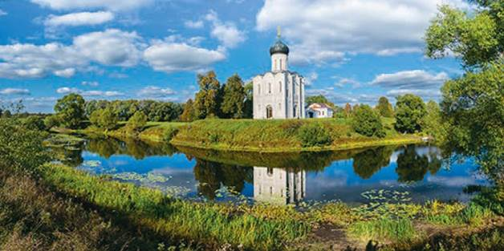
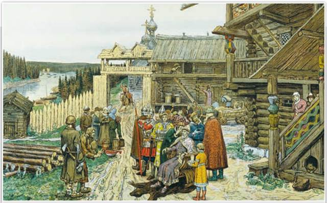
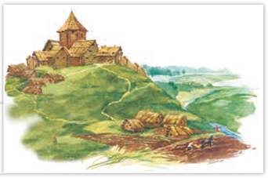
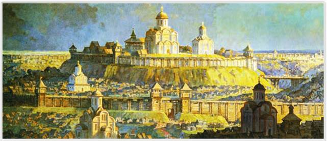
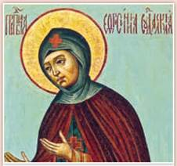

Церковь Покрова на Нерли. XII в. Владимирская область
Среди заливного луга, на высоком рукотворном холме, не одну сотню лет стоит белокаменный храм — шедевр владимиро-суздальского зодчества эпохи раздробленности Руси.
Попытки князей сохранить единство Руси не увенчались успехом. После недолгого затишья Русская земля снова превратилась в поле брани. Наступило время политической раздробленности. Почему же распалась единая держава? Что бросало князей в кровавую пучину братоубийственных войн? И почему внешняя угроза не остановила бесконечную череду усобиц, в которых горели города и погибали люди?

Двор удельного князя. Художник А. Васнецов. 1909 г.
Иллюстрация была создана художником для издания «Картины по русской истории». На картине можно рассмотреть княжеский терем, хозяйственные постройки, проездные ворота.
Найдите на картине князя, дружину, зависимых людей.
РОССИЯ
МИР
1. Причины и особенности раздробленности. В XII столетии Русь вступила в период политической раздробленности, который длился почти 300 лет. Условной датой начала раздробленности принято считать 1132 г. — дату кончины Мстислава Великого. «Раздрася вся Русская земля», — написал летописец. Это означало, что единое государство Русь распалось на самостоятельные государственные образования. Независимые княжеские владения рода Рюриковичей стали называться землями. Большинство земель складывалось на основе волостей.
Почему же Русь вступила в период раздробленности? Политической причиной раздробленности явилось отсутствие строгого порядка престолонаследия. Решение Любечского съезда — «Каждый держит отчину свою» — должно было прекратить княжеские распри. На самом деле съезд князей в Любече привёл к новым усобицам, по сути, закрепил разделение Руси, ведь династия Рюриковичей разрасталась и каждому её представителю нужен был свой престол.
Экономическими причинами распада Руси стали изменения, происходившие в хозяйственной жизни: развитие вотчин, господство натурального хозяйства, отсутствие торговых связей между отдельными территориями.
Распад государства не привёл к утрате понятий «Русь», «Русская земля». Люди продолжали воспринимать Русь как общее пространство, свою Отчизну. Их по-прежнему связывали православная церковь, общие культурные традиции, язык. Независимые друг от друга земли продолжали жить по законам Русской Правды. Киев ещё долго считался общерусской столицей, а киевский князь именовался «князем всея Руси».

Боярская вотчина
Термин «вотчина» произошёл от славянского слова «отчина», то есть «отцовская собственность».
2. Последствия раздробленности. Распад Руси был закономерным этапом развития государства. Такой же путь — ослабление власти верховного правителя и распад крупных территорий на более мелкие со своими независимыми правителями — прошли многие страны Западной Европы и Востока.
Историки выделяют как положительные, так и отрицательные последствия раздробленности. С одной стороны, раздробленность ускорила развитие русских земель. Начался бурный подъём экономической жизни на местах. Бывшие «медвежьи углы» догоняли Поднепровье и Новгород, а некоторые земли со временем стали их политическими соперниками. Особенно это касалось Владимиро-Суздальской земли и юго-западных русских земель.
В период раздробленности наблюдался ускоренный рост городов. В каждой земле развивались свои культурные центры. Зодчие строили каменные храмы, распространялись грамотность и книгописание. Теперь летописи вели не только в Киеве и Новгороде, но и в других городах.

Смоленск великокняжеский. Фрагмент. Художник А. Булдаков. 2017 г. Зал Смоленского железнодорожного вокзала
В 1127 г. киевский князь Мстислав Великий отдал Смоленск в удел своему сыну Ростиславу. Расцвет города пришёлся на XII — начало XIII в., когда в нём возводились каменные храмы и активно велась торговля.
Найдите на картине кремль, сторожевые башни, мост через ров, посад.
С другой стороны, раздробленность имела и отрицательные последствия. Мирную жизнь постоянно прерывали жестокие усобицы князей, что приводило к большим жертвам и хозяйственному разорению. Дробление владений внутри земель на уделы только множило число междоусобных войн. Уделами (от слова «уделить» — делить) историки называют территории, выделяемые великим князем сыновьям. У князей появились свои дружины, но давать сообща отпор внешнему противнику мешали внутренние распри. Так раздробленность привела к упадку военной мощи Руси.
Вражду князей использовали в своих интересах кочевники. Во второй половине XII в. вновь участились набеги половцев на Русь. Нередко князья нанимали степняков для борьбы друг с другом. Примером тяжёлого последствия раздробленности стал неудачный поход на половцев новгород-северского князя Игоря Святославича в 1185 г. Половцы разгромили полки Игоря, пленив самого князя.
3. Наиболее влиятельные русские земли. Экономические ресурсы, политическая и военная мощь русских земель различались. Наиболее крупными были Киевская, Черниговская, Галицкая, Волынская, Владимиро-Суздальская, Смоленская, Новгородская, Полоцкая земли. Раньше других обособилась Полоцкая земля.
На северо-востоке, во Владимиро-Суздальской земле, князья приобрели неограниченную власть. Особенностью Новгородской земли стало вечевое устройство. В Галицкой и Волынской землях князьям приходилось делиться властью с боярами.
ИСТОРИЧЕСКИЙ ПОРТРЕТ

Святая Евфросиния. Икона
Евфросиния Полоцкая
В эпоху распада Руси в Полоцкой земле, предположительно в 1104 г., родилась девочка, которую назвали Предславой. Княжна, внучка знаменитого князя Всеслава, была невероятно красива, умна и образованна. Совсем юной она вопреки воле отца приняла постриг под именем Евфросиния, променяв отчий дом на каменную келью. При Софийском соборе в Полоцке Евфросиния переписывала книги, а полученные деньги раздавала людям. Она основывала церкви и монастыри, открывала школы и учила детей грамоте. Княжна-монахиня примиряла враждовавших князей и имела право голоса на вечевых собраниях. Археологи нашли личные печати Евфросинии. Всё это говорит о роли Евфросинии не только в духовной, но и государственной жизни Полоцкой земли.
ПОДВЕДЁМ ИТОГИ
К середине XII в. государство Русь вступило в период политической раздробленности. Отдельные земли управлялись князьями из разных ветвей рода Рюриковичей. Несмотря на политическую раздробленность, продолжало существовать представление о культурном единстве Руси, сохранялось понятие «Русская земля».
Вопросы и задания
Работаем с хронологией
Расположите в хронологической последовательности события:
Работаем с источником
Прочитайте отрывок из труда историка Н. Карамзина «История государства Российского» и ответьте на вопрос.
Мстислав... скончался на 56 году от рождения, заслужив имя Великого. Он умел властвовать, хранил порядок внутри государства, и если бы дожил до лет отца своего, то мог бы утвердить спокойствие России на долгое время.
Работаем с понятиями
Объясните, как связаны понятия «натуральное хозяйство» и «политическая раздробленность».
ДОПОЛНИТЕЛЬНЫЕ МАТЕРИАЛЫ
«УЧИТЕЛЮ И УЧЕНИКУ».
Материалы к параграфу на портале «История.РФ».